Hanging Order. Execute the hostages -
in accordance with yesterday's telegram. Lenin.
Please take a look at the painting of the Surrealist Spanish artist Salvador Dali, named "Partial Hallucinations. Six Apparitions of Lenin on a Piano." This work was created in 1931 and it is permanently exhibited at the Mus�e d�Art Moderne, Paris.
One can wonder why was the artist or its character haunted by Lenin's image, and also why was haunted the whole world, philatelic one including, by this philosopher and politician. This page will try to give a short answer to this question, and will show a small selection of innumerable stamps that the USSR post office has dedicated to its creator. It is not my intention to present here Lenin's biography, that can be easily found on the Net, in its various interpretations.

|
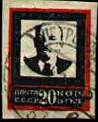 |
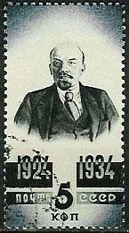 |
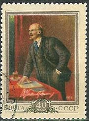 |
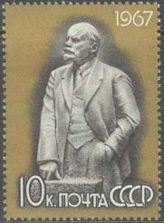 |
Lenin justified theoretically and created practically what the US President Ronald Reagan had the courage to call many years later by its right name: The Evil Empire. Even if Lenin (rightly!) considered himself as a disciple of Marx, Lenin contradicted him in an essential point, by stipulating that the communist society should be firstly built in an underdeveloped country (i.e. Russia). He has created the party that has overthrown, by a putsch, the first democratically elected Russian government (lead by the social-democrat Kerensky). It is he who created the Communist International (Comintern), the international organ for the spreading of communism worldwide. He is the father of some bloody repressive organs like the Cheka (Special Commission, the later NKVD - People's Commissariat of Intern Affairs), and of the GULAG (the Soviet's immense system of concentration camps, where millions sufferend and died). Just as an example among many others, it is by his order that the Kronstadt uprising of sailors (the earlier supporters of the communists) against the Soviet Government was bloodily suppressed.
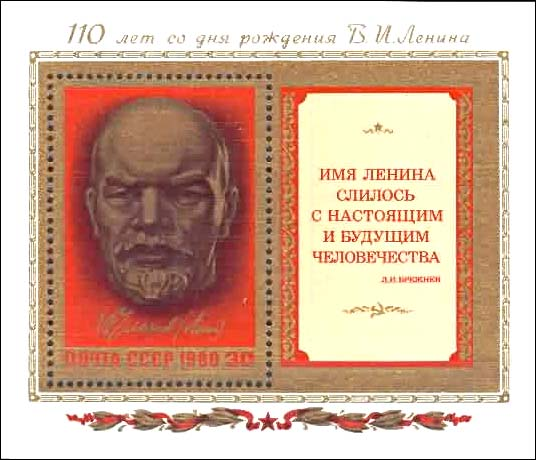
He introduced the term of the "dictatorship of the proletariat", a smoke curtain to conceal the crimes of the group of professional revolutionaries, that he led against the adversaries of communism and the terror by which it was implemented. He is also the father of the Comsomol (the communist organization of the youth) and of the pioneers organization, that "educated" the children. Both were used as well for indoctrination as for the espionage of the adults. He persecuted all religions, by terrorizing their adepts and by incarcerating (and often liquidating) the priests.
After an interview with Lenin, on 19 May 1920, Bertrand Russell noted: "I got the impression that he despises the populace and is an intellectual aristocrat." (Intellectuals, Paul Johnson).
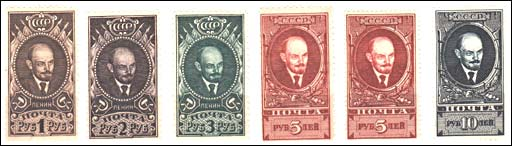
So why is Lenin still considered by so many as a genial thinker, an hero, an example to follow? It is partially the effect of the earlier (and sometimes still present) communist propaganda (note that a joke said that communism is a locomotive that consumes 90 percent on its power through the whistle).
The communist leaders compromised themselves, one after another, because they have never delivered what they promised, and because they used terror in order to achieve their goals. So they needed an immaculate leader, a kind of communist God, and Lenin fit to that, because he was the first leader, a long time ago, he died quickly after he put the communist system in Russia in place, and because his follower and consistent pupil Stalin was even more bloodily and more cruel.
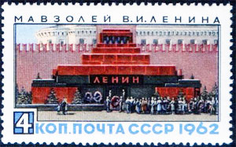
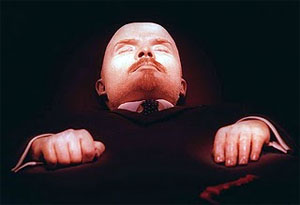
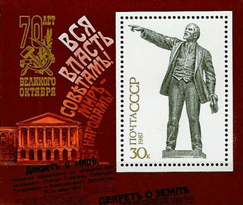
That's why Lenin even got after his death a Mausoleum dedicated to him, in Moscow, on the most central place, the Red Square (a pre-revolutionary name, "red" having here the meaning of "nice"). This was the obligatory transit place for many people who came from the whole USSR and from abroad to visit Moscow. Even if intense rumors about the cause of his death (like syphilis) circulated, most of the visitors weren't aware of them.
|
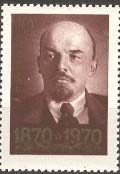 |
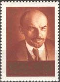 |
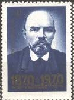 |
 |
Are Lenin's stamps rare or somehow precious? Most of them aren't, excepting for those from the beginning of the USSR, a period for which most of stamps are more difficult to find in a good condition. Historically, some of these stamps are nevertheless interesting. Please notice that about 90 per cent of USSR cancelled stamps are CTO's, and that really used stamps are more valuable.
|
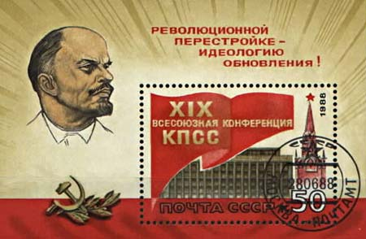 |
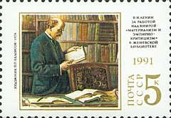 |
The last Lenin stamp, shown above on the right, was issued by USSR on 22nd of April 1991. It commemorated Lenin's 121 birth anniversary. The paintings presents Lenin in a Geneva library, in Switzerland. The freer Russian state didn't celebrate either the 125th birth anniversary or another one. The end of a cult, the end of an era...
An excuse and a hint: Lenin hadn't a particularly nice or friendly face, so that even the bests artists couldn't make it look better. Move the mouse pointer over the above stamps for more information.
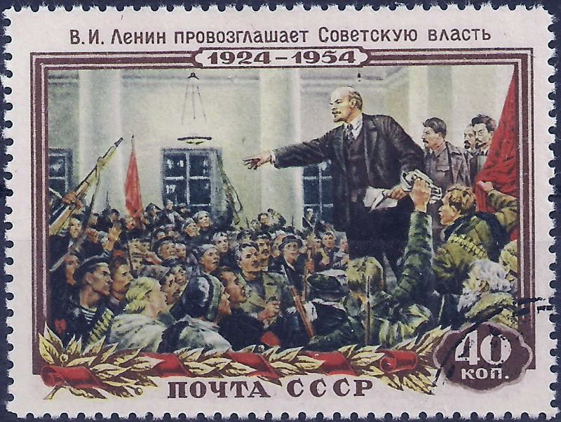
On the stamp above, issued in 1954, is shown an excerpt of the original painting ("Lenin Proclaims the Soviet Power") of the painter Vladimir Serov.
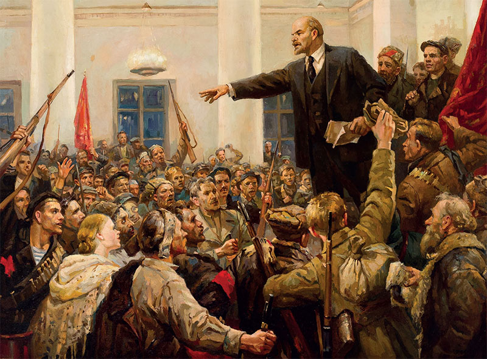
Above is the version on the painting Serov was ordered to paint after the collapse of the cult of personality of Stalin. Please notice that on the new paintings the figures of Joseph Stalin, the Lenin's follower, Yakov Sverdlov, the head of the Bolshevik state and Felix Dzerzhinky, the head of the secret police Cheka were replaced by some unknown participants. These kind of disappearances/replacements were widely spread in all communist countries.
Should Lenin stamps be collected? This is up to anyone, and it depends of its philatelic interests. I don't collect them but many entered my collection together with others, usually more interesting ones.
Lenin doesn't appear on Russian stamps anymore, and elsewhere his statues are removed or transformed. See below the old Lenin's statue from Odessa/Ukraine, transformed into the very, very bad Darth Vador. The old statue is located inside the new one.
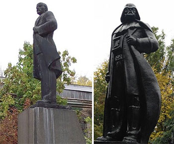
|
|
Created:
07/26/2003.
Revised:
1/10/2024
.
|